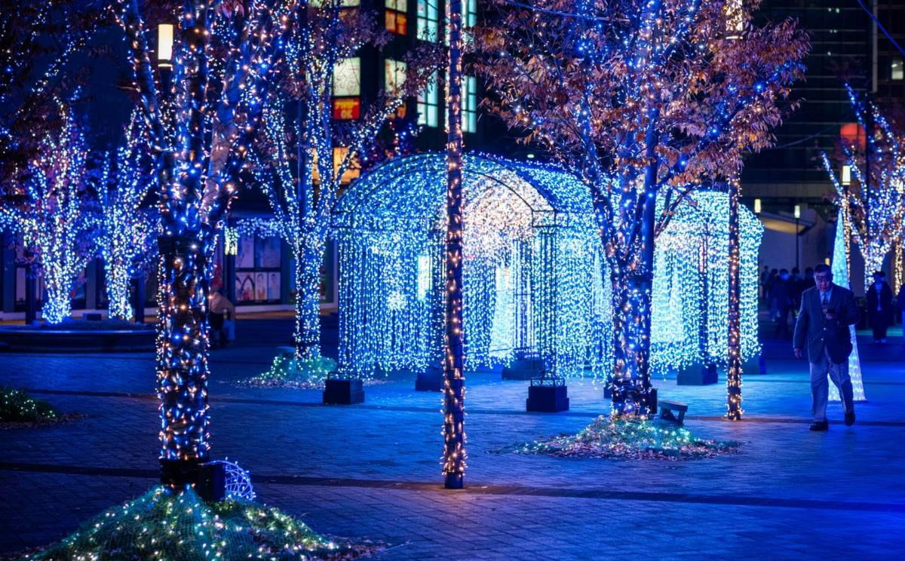

The light show sold out. The parking lot didn't get bigger.
Winter light shows pack 40 nights of family crowds into zoos and gardens built for daytime visits. The lights get a year of planning. The trip from the car to the path usually gets a shuttle and a note to allow extra time.
In 2024, Bonnet Springs Park in Lakeland, Florida ran its holiday light show for 18 days and drew 80,000 guests. Then it called off the 2025 edition. As WUSF reported, even with free shuttles from the local transit agency, "traffic backups and long waits were common." CEO Josh Henderson said the park was taking a break "while we build parking and figure out better strategies to get people in and out."
The show comes back this year, December 18 to 31. The park's event page now lists prepaid parking inside the gates, expanded parking "with shuttles running continuously," and trams to move people between the lots inside the park.
The lights were never the problem. Getting people to them was.
Why do light shows strain venues that handle big crowds every day?
Zoos and botanical gardens are used to crowds. They're used to daytime crowds, though, the kind that arrive over eight hours, spread out, and leave whenever the kids get tired.
A light show compresses all of that. Tickets are timed, the gates open at dusk, and most of the evening's visitors arrive inside the same few hours. Then it happens again the next night, for six or seven weeks.
And the crowds are big. In an industry analysis for Attractions Management, consultants at Leisure Development Partners wrote that winter light shows can account for 5 to 10 percent of a venue's total annual attendance, with total visits ranging from 25,000 up to 2 million. When Chicago Botanic Garden ran Lightscape for the first time in 2019, it sold out 33 evenings with more than 175,000 attendees. Morton Arboretum's Illumination has drawn more than 2 million visitors since it debuted in 2013.
That's a lot of cars arriving at once, in the dark, at a venue whose parking was sized for a Tuesday in April.
What venues tell visitors about parking
The clearest picture of the problem comes from the venues' own visitor pages.
Missouri Botanical Garden's Garden Glow parks guests at two lots a block west of the garden, with "complimentary nonstop shuttle service to the Garden's entrance." On busy evenings, it recommends "allowing extra time for parking and shuttle access," and it asks visitors to "refrain from parking on residential streets or private lots."
The Smithsonian's National Zoo warns that ZooLights "tickets and parking passes tend to sell out quickly." Lincoln Park Zoo in Chicago offers "limited paid parking" in its own lot. Oregon Zoo points families to a transit center park and ride. Austin's Lady Bird Johnson Wildflower Center runs Luminations parking off site with a shuttle every 15 minutes.
None of that is bad planning. A remote lot and a shuttle is the right answer when the main lot can't hold the crowd. But it adds a leg to every visit, and that leg usually gets less design attention than any display on the route.
The route itself is a mile, in the dark, in December
Once people are inside, they walk. Oregon Zoo describes its ZooLights path as "a little over one mile (about 1.25)" and says most guests take about 90 minutes. Garden Glow's path is about a mile and takes 45 minutes to an hour. Morton Arboretum's trail is a mile.
A mile is easy on a spring afternoon. It's a different walk at 8 p.m. in December with a four-year-old, a stroller, and a grandparent who came because the whole family was going. Lincoln Park Zoo's ZooLights runs "rain, snow, or shine," and the Bronx Zoo's Holiday Lights is "a rain or shine event." Families plan the outing weeks ahead and go whatever the weather does.
That's a demographic that would appreciate the help. It's also exactly who these events are marketed to.
Accessibility usually stops at the entrance
Most of these routes are paved, and venues work hard to make them accessible. Morton Arboretum describes Illumination as a one-mile, ADA-accessible trail. Garden Glow lends manual wheelchairs free while supplies last and rents motorized scooters for $35.
What's usually missing is a ride. A wheelchair helps a guest move along the path. It doesn't help them get from a remote lot to the entrance, or back to the exit when they get cold halfway through. Accessible parking near the gate solves that for the guests who get one of those spaces, and the busiest nights are the ones when they run out. We've written about why that gap is getting wider as the population ages.
A light show is judged twice: once on the path, and once in the parking lot on the way home.
Running a light show at a zoo, garden, or park?
FlexTram plans routes from your remote lots and around your service roads, sizes the fleet to your busiest nights, and supplies the vehicles for the season.
The neighbors notice too
When the parking plan falls short, the overflow goes onto residential streets, which is why so many venue pages ask visitors not to park there. The concern isn't new. Before Woodland Park Zoo in Seattle launched its first holiday light event in 2012, the president of the Phinney Ridge Community Council told MyNorthwest, "We're really concerned about the danger of doing something like this, 40 nights in a row."
That's the part that makes light show logistics different from a one-day event. A festival can survive one bad night of traffic. A light show has to be a good neighbor for six weeks, and the venue has to stay one for the other 46.
Why a seasonal problem calls for a seasonal fleet
Most zoos and gardens don't own a shuttle fleet, and buying one for a light show is hard to justify. The equipment would earn its keep for six to eight weeks and sit for the rest of the year, insured and maintained the whole time. It's the same math we walked through for small and midsize amusement parks: when the peak is seasonal, the transportation should be too.
That's where FlexTram fits. We run fixed routes with posted stops, typically on three jobs:
- Remote lot to entrance. A continuous loop on the leg venues already run with buses, often on shorter routes or tighter lots where a full-size coach is more than the job needs.
- A ride for guests who need one. Where a service road runs alongside the display route, a loop to the exit or a midpoint for guests who can't walk the full mile in the cold.
- Seasonal staff and volunteers. The people running the show park far away too, and they arrive before the crowd and leave after it.
One driver moves up to 27 people per trip. The units run on pavement, gravel, and grass, so a grass overflow lot isn't a problem, and ADA access with wheelchair securement is standard on every vehicle. The fleet deploys in hours, runs for the season, and leaves when the lights come down. See our attractions page for more on how this works at parks and venues.
The lights get a year of planning. The ride from the car deserves a few weeks of it.
— The FlexTram Team
Frequently asked questions
Why is parking so hard at zoo and botanical garden light shows?
These venues were built for daytime visitors who arrive across a whole day. A light show compresses its crowd into a few evening hours with timed entry, and it runs for 30 to 50 nights. Lots that work on an ordinary Saturday fill early, so venues sell parking passes in advance, open remote lots, and run shuttles. Missouri Botanical Garden's Garden Glow parks guests at two lots a block west of the garden with a nonstop shuttle, and the National Zoo notes that ZooLights tickets and parking passes tend to sell out quickly.
How far do visitors walk at a holiday light show?
Usually about a mile on the route itself, before the walk from parking. Oregon Zoo ZooLights describes its path as a little over one mile, about 1.25, and says most guests take about 90 minutes. Garden Glow's path is about one mile and takes 45 minutes to an hour. Morton Arboretum's Illumination is a one-mile trail. That is a long evening in December for young children and older relatives.
Are holiday light shows accessible for wheelchair users and older guests?
Many routes are paved and accessible, and venues typically offer manual wheelchairs and scooter rentals. Garden Glow, for example, lends manual wheelchairs free while supplies last and rents motorized scooters for $35. What is usually missing is a ride: from a remote lot to the entrance, or back to the exit for a guest who gets cold or tired halfway through. Accessible parking near the entrance helps only the guests who get one of those spaces.
Why rent shuttles for a light show instead of buying them?
A light show runs for six to eight weeks. Owning a fleet for those weeks means paying to store, insure, and maintain it for the other ten months. A rental lands in the event budget, is sized to the busiest nights, and can grow in the second season once the venue knows where the crowds actually collected.
How does FlexTram work at a winter light show?
FlexTram runs fixed routes with posted stops: remote or overflow lot to the entrance, and where the venue has a service road, a loop to the exit or a midpoint for guests who need a ride. One driver moves up to 27 people per trip, the units run on pavement, gravel, and grass, and ADA access with wheelchair securement is standard. The equipment deploys in hours, runs for the season, and leaves when the lights come down.
Related reading
Put the walk from the car on a schedule.
FlexTram offers seasonal rentals, long-term leases, and turnkey transportation plans for zoos, botanical gardens, parks, and holiday events.